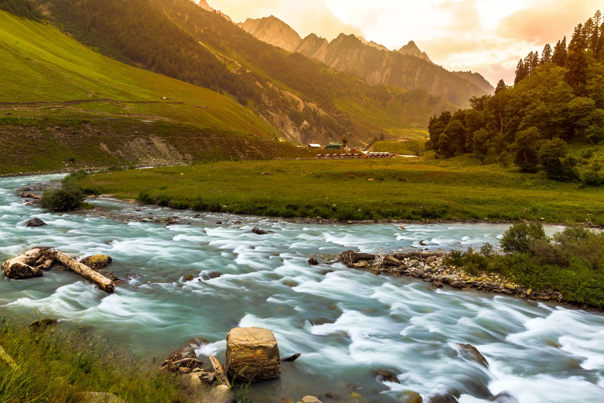
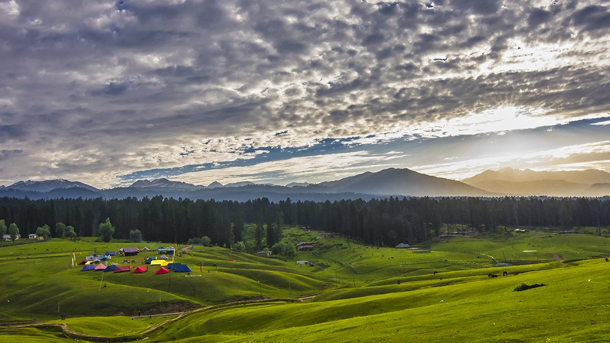
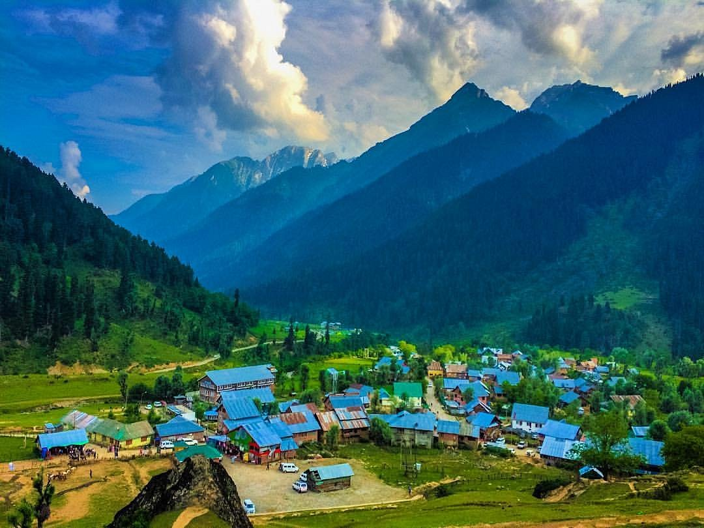
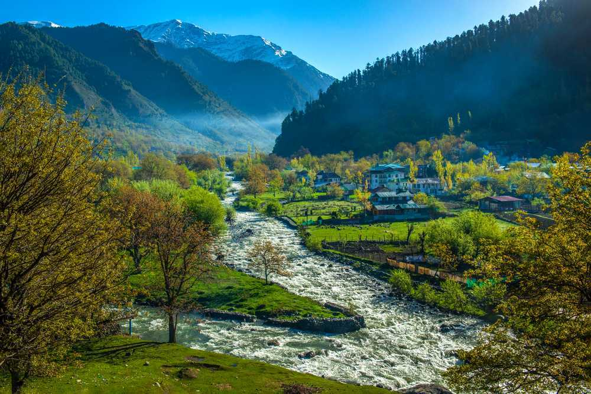

Srinagar

Gulmarg

Sonmarg

Yusmarg

Aru

Pahalgam
Srinagar
Gulmarg
Sonmarg
Yusmarg
Aru
Pahalgam
Welcome to the crown jewel of India, Jammu & Kashmir! Nestled in the northernmost region of the country, this paradise on Earth is a land of breathtaking natural beauty, diverse culture, and warm hospitality. With its majestic Himalayan landscapes, pristine lakes, and serene valleys, Jammu & Kashmir is a destination that captivates the hearts of travelers from around the world.
Our mission is to help you discover the enchanting beauty and rich cultural heritage of Jammu & Kashmir. Whether you are an adventure seeker, a nature lover, or someone looking for a tranquil escape, we have something special to offer you.
Explore the lush green meadows of Gulmarg, the tranquil waters of Dal Lake in Srinagar, the adventurous terrains of Ladakh, and the spiritual heritage of Jammu. Indulge in local cuisine, visit historic sites, and immerse yourself in the warmth of the local communities.